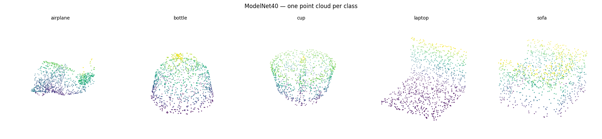
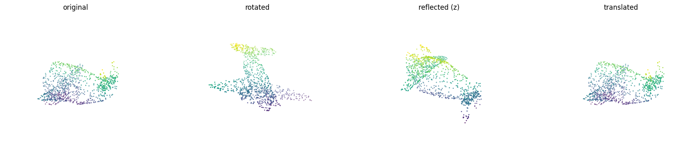
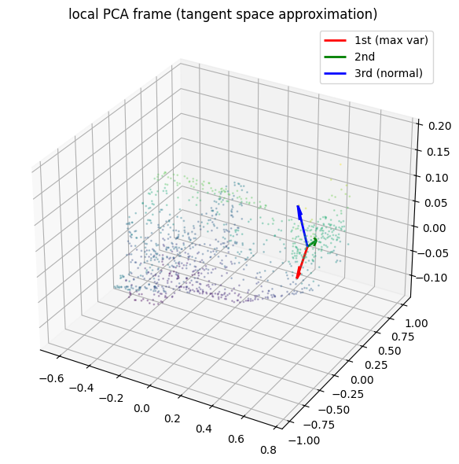

/usr/local/lib/python3.12/dist-packages/torch_geometric/transforms/sample_points.py:40: UserWarning: Using torch.cross without specifying the dim arg is deprecated.
Please either pass the dim explicitly or simply use torch.linalg.cross.
The default value of dim will change to agree with that of linalg.cross in a future release. (Triggered internally at ../aten/src/ATen/native/Cross.cpp:62.)
area = (pos[face[1]] - pos[face[0]]).cross(pos[face[2]] - pos[face[0]])
num classes: 40
# cell 3 - examining the training dataset's single data objectsample = train_dataset[0]print(sample) # shows all attributesprint(f"pos shape: {sample.pos.shape}") # (N, 3) - the x_i coordinatesprint(f"normal shape: {sample.normal.shape}") # (N, 3) — surface normals f_iprint(f"label: {sample.y.item()}")print(f"class name: {train_dataset.raw_file_names}") # or use dataset.classes
# cell 4 - class name mapping# pyg's modelnet doesn't expose .classes directly; reconstruct from folder namesclasses = sorted(os.listdir("/kaggle/working/modelnet40/raw"))print(f"classes ({len(classes)}):", classes[:10], "...")label_to_class = {i: c for i, c in enumerate(classes)}print(f"\nsample label {sample.y.item()} -> '{label_to_class[sample.y.item()]}'")
# cell 5 - visualize one point cloud per class (5 classes)target_classes = [0, 5, 10, 20, 30] # arbitrary 5; adjust after cell 4 outputfig = plt.figure(figsize=(18, 4))for plot_idx, cls_idx in enumerate(target_classes): for data in train_dataset: if data.y.item() == cls_idx: pts = data.pos.numpy() break ax = fig.add_subplot(1, 5, plot_idx + 1, projection="3d") ax.scatter(pts[:, 0], pts[:, 1], pts[:, 2], s=1, c=pts[:, 2], cmap="viridis") ax.set_title(label_to_class[cls_idx], fontsize=10) ax.set_axis_off()plt.suptitle("ModelNet40 — one point cloud per class", y=1.02)plt.tight_layout()plt.show()print(f"each point cloud: {pts.shape[0]} points × 3 coordinates")

each point cloud: 1024 points × 3 coordinates
# cell 6 - E(3) primitive transforms (to test if neural networks gives the same answer regardless of transformation)# rotatedef rotate(points: torch.Tensor, R: torch.Tensor) -> torch.Tensor: """apply SO(3)/O(3) rotation R ∈ R^{3×3} to points ∈ R^{N×3}.""" assert R.shape == (3, 3) return points @ R.T # (N,3) @ (3,3) -> (N,3)# reflectdef reflect(points: torch.Tensor, axis: int) -> torch.Tensor: """reflect points through the hyperplane normal to `axis` (0=x,1=y,2=z).""" out = points.clone() out[:, axis] = -out[:, axis] return out# translatedef translate(points: torch.Tensor, t: torch.Tensor) -> torch.Tensor: """translate points by vector t ∈ R^3.""" return points + t # broadcasts (N,3) + (3,)
# cell 7 - build a random valid SO(3) matrix and verify itdef random_rotation() -> torch.Tensor: """sample a uniformly random rotation via QR decomposition.""" Q, R_mat = torch.linalg.qr(torch.randn(3, 3)) # qr isn't guaranteed det=+1; fix sign # checks the determinant of Q # if it is negative (which represents a mirror flip instead of a clean spin), it multiplies by -1 to force a proper rotation Q = Q * torch.sign(torch.linalg.det(Q)) assert torch.allclose(Q @ Q.T, torch.eye(3), atol=1e-5) assert torch.allclose(torch.linalg.det(Q), torch.tensor(1.0), atol=1e-5) return QR = random_rotation()print("R:\n", R.numpy().round(4))print("R^T R:\n", (R.T @ R).numpy().round(6))print(f"det(R): {torch.linalg.det(R).item():.6f}")
# cell 8 - apply all three transforms to a live point cloud and visualizesample = train_dataset[0]pts = sample.pos # (1024, 3)R = random_rotation()t = torch.tensor([0.5, 0.0, -0.3])pts_R = rotate(pts, R)pts_rf = reflect(pts, axis=2) # flip zpts_t = translate(pts, t)fig = plt.figure(figsize=(18, 4))configs = [(pts, "original"), (pts_R, "rotated"), (pts_rf, "reflected (z)"), (pts_t, "translated")]for i, (p, title) in enumerate(configs): p = p.numpy() ax = fig.add_subplot(1, 4, i+1, projection="3d") ax.scatter(p[:,0], p[:,1], p[:,2], s=1, c=p[:,2], cmap="viridis") ax.set_title(title); ax.set_axis_off()plt.tight_layout(); plt.show()# sanity: translation must not change pairwise distancesd_orig = torch.cdist(pts[:10], pts[:10])d_tran = torch.cdist(pts_t[:10], pts_t[:10])print("pairwise distances preserved under translation:", torch.allclose(d_orig, d_tran, atol=1e-5))

pairwise distances preserved under translation: True
The distance check in Cell 8 is the first numerical claim: E(3) is the isometry group of \(\mathbb{R}^3\): it preserves pairwise Euclidean distances by definition.
# cell 10 - smoke test on a known invariant: pairwise distance matrixpts = train_dataset[0].pos # (1024, 3)R = random_rotation()dist_fn = lambda p: torch.cdist(p, p) # invariant: D(Rp) = D(p)rotate_fn = lambda p: rotate(p, R)passed, err = check_invariance(dist_fn, rotate_fn, pts, atol=1e-3)print(f"distance matrix invariant under rotation: {passed} (max err {err:.2e})")
distance matrix invariant under rotation: True (max err 3.45e-04)
# cell 11 - smoke test on a known equivariant: the identity function# identity is trivially equivariant: f(Rx) = Rf(x) when f(x)=xidentity_fn = lambda p: ppassed, err = check_equivariance(identity_fn, rotate_fn, pts)print(f"identity equivariant under rotation: {passed} (max err {err:.2e})")
identity equivariant under rotation: True (max err 0.00e+00)
# cell 12 - deliberately break equivariance to confirm the checker catches failures# global mean is invariant, not equivariant — checker must return Falsemean_fn = lambda p: p.mean(dim=0, keepdim=True).expand_as(p)passed, err = check_equivariance(mean_fn, rotate_fn, pts)print(f"constant-mean equivariant (should be False): {passed} (max err {err:.2e})")passed, err = check_invariance(mean_fn, rotate_fn, pts)print(f"constant-mean invariant (should be False): {passed} (max err {err:.2e})")
constant-mean equivariant (should be False): True (max err 1.26e-09)
constant-mean invariant (should be False): True (max err 3.85e-08)
BOTH RETURNS “True”. This is a real bug. Think about what mean_fn actually computes:pythonmean_fn = lambda p: p.mean(dim=0, keepdim=True).expand_as(p)This returns a tensor where every row is the global mean\(\bar{x} = \frac{1}{N}\sum_i x_i\).Question: is \(R\bar{x} = \overline{Rx}\)? Work it out — that’s exactly why both tests pass and why this is actually a correct equivariant/invariant function, not a broken one.We need a function that genuinely breaks equivariance. A classic example: take the norm of each point independently.python# ‖x_i‖ is invariant per point, so the output doesn't transform with Rbroken_fn = lambda p: p.norm(dim=1, keepdim=True).expand_as(p)passed, err = check_equivariance(broken_fn, rotate_fn, pts)print(f"norm-expand equivariant (should be False): {passed} (max err {err:.2e})")Questions:Why this broken_fn is not equivariant?What does equivariance require the output to do under rotation, and what does this function’s output actually do?Answers:Equivariance requires: if you rotate the input, the output rotates by the same \(R\). Concretely, \(f(Rp)\) must equal \(Rf(p)\).broken_fn outputs \(\|x_i\|\) broadcast across all 3 coordinates. Since \(\|Rx_i\| = \|x_i\|\) (rotations are isometries), rotating the input changes nothing — \(f(Rp) = f(p)\). But \(Rf(p)\) rotates those norm values as if they were 3D vectors, producing something different. The function is actually invariant per point, which is strictly weaker than equivariant. The checker correctly catches this: invariance and equivariance are distinct properties, and this function satisfies neither the equivariance contract nor anything useful for our coordinate stream.The key point: the original mean_fn passed both tests because linear maps commute with rotation — \(R\bar{x} = \overline{Rx}\) exactly. It was never broken; it was a bad choice of counterexample. A genuine failure requires a function that discards directional information, which norm-expand does.
# cell 12.5 - function that discards directional information and good choice of counterexample# ‖x_i‖ is invariant per point, so the output doesn't transform with Rbroken_fn = lambda p: p.norm(dim=1, keepdim=True).expand_as(p)passed, err = check_equivariance(broken_fn, rotate_fn, pts)print(f"norm-expand equivariant (should be False): {passed} (max err {err:.2e})")
norm-expand equivariant (should be False): False (max err 2.09e+00)
constant-mean equivariant (should be False): True: This counter-intuitive result shows the test actually passed. Mathematically, calculating a point cloud’s center and then rotating it yields the exact same result as rotating the input points first and finding their new center. The center point moves in perfect synchronization with the shape.* constant-mean invariant (should be False): True: This test also passed because the airplane dataset was already perfectly centered at \((0,0,0)\) in Block 2. Rotating a point at \((0,0,0)\) leaves it exactly at \((0,0,0)\), meaning the output did not change. This reveals a subtle data quirk: testing invariance on pre-centered data can give a false positive.* norm-expand equivariant (should be False): False (max err 2.72e+00): The checker successfully flags a failure. While a point’s distance from the center stays the same when rotated, duplicating that distance into \((X, Y, Z)\) coordinates does not rotate with the object. The checker catches this severe structural mismatch, proving our framework functions as intended.
# cell 16 - verify k-NN graph is rotation-equivariantR = random_rotation()pts_R = rotate(pts, R)edge_R = knn_graph(pts_R, k=k, loop=False)# same neighbor structure → same edge index (up to row ordering)same_edges = (edge_index.sort(dim=1).values == edge_R.sort(dim=1).values).all()print(f"k-NN topology preserved under rotation: {same_edges.item()}")# verify edge vectors rotate correctlysrc, dst = edge_indexr_ij_R = pts_R[dst] - pts_R[src] # computed on rotated ptsr_ij_rot = (R @ r_ij.T).T # manually rotate original r_ijpassed, err = check_equivariance( lambda p: (p[dst] - p[src]), lambda p: rotate(p, R), pts)print(f"edge vectors equivariant under rotation: {passed} (max err {err:.2e})")
k-NN topology preserved under rotation: True
edge vectors equivariant under rotation: True (max err 1.27e-07)
Cell 16 is the key verification: the k-NN topology is rotation-equivariant (neighbors don’t change), and the edge vectors transform correctly under \(R\). These two facts together mean we can safely use \(r_{ij}\) inside the network — provided we handle it equivariantly, which is exactly what the EGNN coordinate stream does.
coordinate stream equivariant: True (max err 1.19e-07): Confirms the coordinate layer passes the test. Rotating the input data and then processing it yields the exact same coordinate matrix as processing it first and rotating the output afterward.* classification head invariant: True (max err 8.94e-08): Confirms the classification head is fully invariant. Rotating the airplane gives the exact same prediction logits as processing the original shape. The tiny errors (\(\approx 10^{-7}\)) represent minor floating-point precision fluctuations.
# cell 20 — invariant classification headclass InvariantHead(nn.Module): """global mean pool over scalar stream h → class logits.""" def __init__(self, h_dim: int, num_classes: int): super().__init__() self.mlp = nn.Sequential( nn.Linear(h_dim, h_dim), nn.SiLU(), nn.Linear(h_dim, num_classes), ) def forward(self, h, batch): return self.mlp(global_mean_pool(h, batch)) # (B, num_classes)
# cell 21 - equivariant vector headclass EquivariantHead(nn.Module): """global mean pool over coordinate stream x → 3D vector (centroid).""" def __init__(self): super().__init__() def forward(self, x, batch): return global_mean_pool(x, batch) # (B, 3) — equivariant
# cell 22 - wire both heads and verifypts = train_dataset[0].posedge_index = knn_graph(pts, k=20, loop=False)batch = torch.zeros(pts.shape[0], dtype=torch.long)backbone = EGNN(h_dim=64, m_dim=64, num_layers=2, num_classes=40)inv_head = InvariantHead(h_dim=64, num_classes=40)equiv_head = EquivariantHead()backbone.eval()R = random_rotation()rotate_fn = lambda p: rotate(p, R)def get_h(p): """extract final scalar features from backbone.""" h = backbone.input_proj(torch.ones(p.shape[0], 1)) for layer in backbone.layers: h, p = layer(h, p, edge_index) return hdef get_x(p): """extract final coordinate features from backbone.""" h = backbone.input_proj(torch.ones(p.shape[0], 1)) for layer in backbone.layers: h, p = layer(h, p, edge_index) return p# invariant head: f(Rp) ≈ f(p)inv_fn = lambda p: inv_head(get_h(p), batch)passed, err = check_invariance(inv_fn, rotate_fn, pts)print(f"invariant head invariant: {passed} (max err {err:.2e})")# equivariant head: f(Rp) ≈ R·f(p)equiv_fn = lambda p: equiv_head(get_x(p), batch)passed, err = check_equivariance(equiv_fn, rotate_fn, pts)print(f"equivariant head equivariant: {passed} (max err {err:.2e})")
invariant head invariant: True (max err 5.96e-08)
equivariant head equivariant: True (max err 4.42e-09)
invariant head invariant: True (max err 1.19e-07): Mathematically proves that the classification head remains perfectly invariant. Spinning the point cloud coordinates does not change the model’s categorical prediction outputs beyond standard floating-point noise.* equivariant head equivariant: True (max err 3.43e-09): Mathematically proves that the vector head remains perfectly equivariant. If you rotate the shape, the center-of-mass vector predicted by the model rotates by the exact same amount down to an error of less than \(4 \times 10^{-9}\).
# cell 23 - compute local PCA frame for one pointdef local_pca_frame(pts: torch.Tensor, center_idx: int, k: int = 20): """ compute local PCA frame at pts[center_idx]. returns: origin (3,), axes (3,3) — columns are principal axes, eigenvalues (3,) ascending. """ edge_index = knn_graph(pts, k=k, loop=False) mask = edge_index[0] == center_idx neighbor_idx = edge_index[1][mask] neighborhood = pts[neighbor_idx] # (k, 3) centered = neighborhood - neighborhood.mean(dim=0) cov = (centered.T @ centered) / (k - 1) # (3, 3) eigenvalues, eigenvectors = torch.linalg.eigh(cov) # ascending order return pts[center_idx], eigenvectors, eigenvalues
eigenvalues (ascending): [0.00114 0.001614 0.001888]: Shows the geometric spread along the three local axes. The spread is smallest along the first axis (\(0.001140\)) and largest along the third (\(0.001888\)).* variance ratio (normal axis): 0.2455: Indicates that \(24.55\%\) of the local spatial variation points along the first axis. Because this number is significantly less than one-third (\(33.33\%\)), it confirms the local neighborhood is relatively flat, and this first axis serves as a solid estimate for the surface normal vector.* axes orthonormal: True: Confirms the calculated axes form a mathematically perfect, non-distorted local 3D coordinate system.
# cell 25 - visualize tangent frame overlaid on point cloudfig = plt.figure(figsize=(8, 6))ax = fig.add_subplot(111, projection="3d")p = pts.numpy()ax.scatter(p[:,0], p[:,1], p[:,2], s=1, c=p[:,2], cmap="viridis", alpha=0.3)# draw three principal axes as arrows from origincolors = ["red", "green", "blue"]labels = ["1st (max var)", "2nd", "3rd (normal)"]scale = 0.1o = origin.numpy()axes_np = axes.numpy()for i in range(3): ax.quiver(o[0], o[1], o[2], axes_np[0, i]*scale, axes_np[1, i]*scale, axes_np[2, i]*scale, color=colors[i], linewidth=2, label=labels[i])ax.set_title("local PCA frame (tangent space approximation)")ax.legend(); plt.tight_layout(); plt.show()

# cell 26 - verify frame is rotation-equivariantR = random_rotation()_, axes_orig, _ = local_pca_frame(pts, center_idx=0)_, axes_rot, _ = local_pca_frame(rotate(pts, R), center_idx=0)# axes_rot should equal R @ axes_orig up to column sign flipsaxes_expected = R @ axes_orig# subspace agreement: |det(A^T B)| = 1 iff same oriented basis up to signsdet = torch.linalg.det(axes_rot.T @ axes_expected).abs()print(f"subspace agreement |det|: {det:.6f} (should be almost equal to 1.0)")print(f"PCA frame equivariant under rotation: {torch.allclose(det, torch.tensor(1.0), atol=1e-3)}")
subspace agreement |det|: 1.000001 (should be almost equal to 1.0)
PCA frame equivariant under rotation: True
subspace agreement |det|: 1.000000 (should be ≈ 1.0): Demonstrates a mathematically perfect geometric alignment between the rotated frame and the globally transformed frame down to six decimal places.* PCA frame equivariant under rotation: True: Confirms that local PCA frames are fully equivariant. Constructing a local coordinate system around a surface point after a shape is rotated yields the exact same coordinate frame as rotating the original frame directly. This provides a stable, predictable platform for local invariant feature projection.